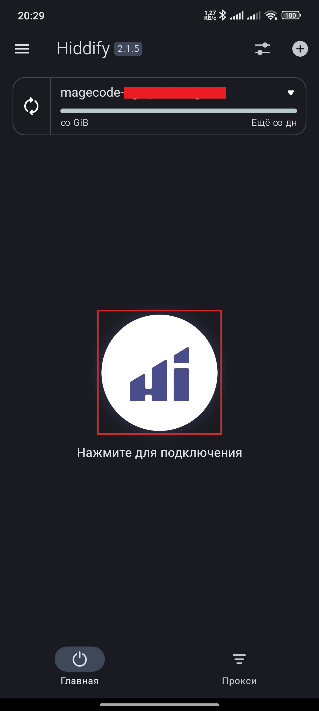

1. Получите подписку VPN
Свяжитесь с нами в Telegram или получите конфигурацию у других провайдеров.
2. Установите клиент VPN
Для подключения необходимо установить клиент. Мы рекомендуем Hiddify:
Скопируйте конфигурацию подписки:
Добавьте её в приложение:
-
Выберите "Новый профиль"
-
Нажмите "Добавить из буфера обмена"
Подключитесь к VPN:

Дополнительно
- Для полного проксирования выберите регион "Другой" в настройках.
- На ПК включите режим "VPN", если требуется для некоторых программ.
- В разделе "Прокси" выберите наилучшую конфигурацию по задержке.